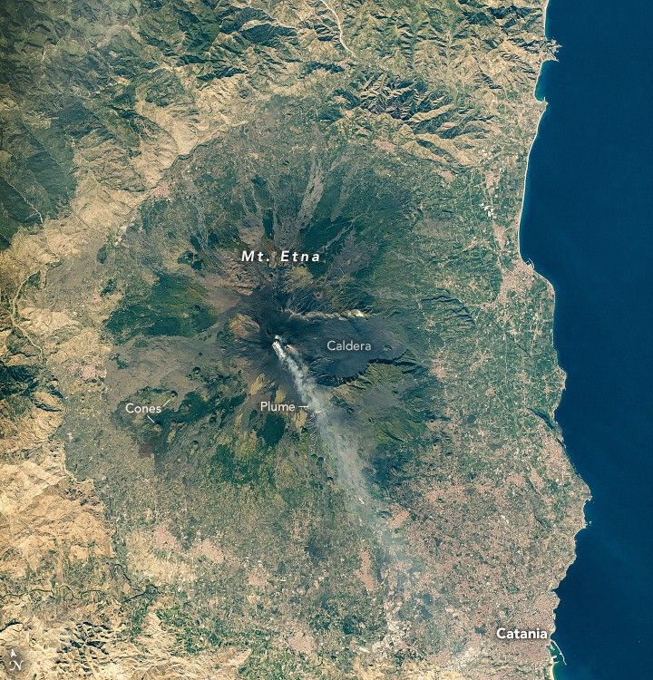

Italy’s Majestic Mount Etna
Astronauts aboard the International Space Station captured this detailed photo of Mount Etna, one of Europe’s tallest peaks at 3,403 meters (11,165 feet) above sea level. It is also one of the world’s most active volcanoes. As the station passed overhead on October 14, 2024, long gray and brown plumes emanated from the Italian peak, actively emitting gas and ash.
The plumes merge and pass directly over the port city of Catania (lower right), located on the southeastern margin of the volcano. The volcano is cone-shaped but appears roughly circular in this vertical view, with a basal circumference of 140 kilometers (87 miles). Etna’s darker-colored rocks and highly vegetated areas contrast sharply with the surrounding lighter-toned countryside.
Etna is a stratovolcano, capable of explosive eruptions, located on the eastern coastline of the Italian island of Sicily. Key features include the dark lava flows spreading radially down its slopes. The youngest flows are identified by the darkest rocks. A lava flow from the 1669 eruption overran the western suburbs of Catania. Near the summit lies a caldera, a depression where the volcano collapsed inward, while small cones on the lower western slopes indicate minor eruption centers.
Etna holds significant economic importance for Sicily. Nearly one-third of the island’s population lives on the volcano’s slopes, attracted by fertile volcanic soils and tourism. Switchback roads on the flanks indicate intensive use of the slopes; these roads are visible in high-resolution images.
Mount Etna experiences frequent periods of unrest, which increases the likelihood that astronauts on the space station can observe volcanic plumes. An earlier astronaut photo captured the volcano during a more vigorous eruption in 2002.